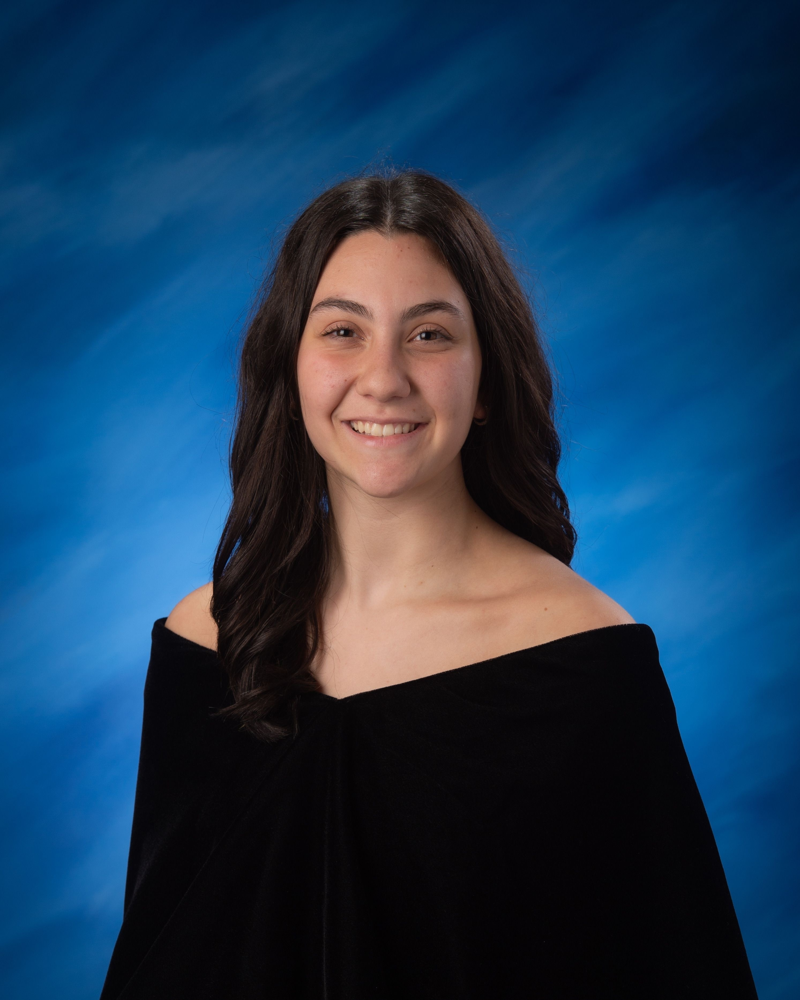

Hi everyone, my name is Samantha. I am a student in the University of Maryland Honors College, studying Information and Technology design.

My main goal at the University of Maryland is to design fair and accessible user interface / user experience websites.
I am working towards the ability to create and design my own websites and applications for public use.